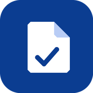

Informativa sulla privacy
I tuoi documenti restano tuoi.
Ultimo aggiornamento: novembre 2026
In breve: DodiFile non ha server, non ha account, non ha pubblicità e non ha strumenti di analisi. Non raccoglie, non invia e non condivide alcun dato personale: tutto ciò che salvi rimane sul tuo dispositivo.
Chi è il titolare
DodiFile è sviluppata da Adry Doditech ("lo sviluppatore"). Poiché l'app non raccoglie dati, lo sviluppatore non è in possesso di alcuna informazione che ti riguardi. Per domande puoi aprire una segnalazione sulla pagina del progetto: github.com/DODITECH83/DodiFile.
Che cosa salva l'app, e dove
- Documenti (foto, PDF), testo riconosciuto, titolo, categoria, note, scadenze e importi: nell'archivio interno del tuo dispositivo (IndexedDB).
- Impostazioni (nome, tema, promemoria, blocco): nella memoria locale dell'app.
- PIN: conservato solo come impronta crittografica (PBKDF2-SHA256), mai in chiaro.
- Impronta digitale / sblocco del telefono: gestiti dal sistema del tuo telefono; l'app riceve solo la conferma "riconosciuto" o "non riconosciuto" e non vede né salva mai dati biometrici.
Riconoscimento del testo (OCR)
La lettura dei documenti avviene interamente sul dispositivo, con un motore incluso nell'app. Le immagini non vengono inviate a nessun servizio esterno.
Autorizzazioni richieste
- Fotocamera: solo quando scegli di fotografare un documento.
- Notifiche: solo se le attivi, per ricordarti le scadenze.
- Archiviazione persistente: per evitare che il sistema cancelli l'archivio quando manca spazio.
Condivisione con terze parti
Nessuna. L'app non include pubblicità, tracker, SDK di analisi o servizi di terzi. Se usi "Esporta backup" o "Condividi", il file viene creato sul tuo dispositivo e sei tu a decidere dove inviarlo.
Backup e cancellazione
Il backup è un file che scegli tu di esportare. Puoi cancellare un singolo documento oppure tutti i dati dal menu Impostazioni → "Cancella tutto". Disinstallando l'app o svuotando i dati del sito, l'archivio viene eliminato. Non esistendo copie su server, lo sviluppatore non può recuperarlo: conserva un backup se ti serve.
Sicurezza
Il blocco con PIN o impronta impedisce a chi prende in mano il telefono di aprire l'app. I documenti non sono cifrati nell'archivio del dispositivo: proteggi il telefono con il blocco schermo.
Minori
L'app non raccoglie dati di nessuno, quindi nemmeno dei minori.
Cambiamenti
Se in futuro l'app cambiasse il trattamento dei dati, questa pagina verrebbe aggiornata e la data in alto modificata. Il codice è aperto e consultabile su GitHub.
I tuoi diritti
Poiché i dati sono solo nelle tue mani, puoi accedervi, correggerli, esportarli o cancellarli in ogni momento direttamente dall'app (artt. 15–20 GDPR).